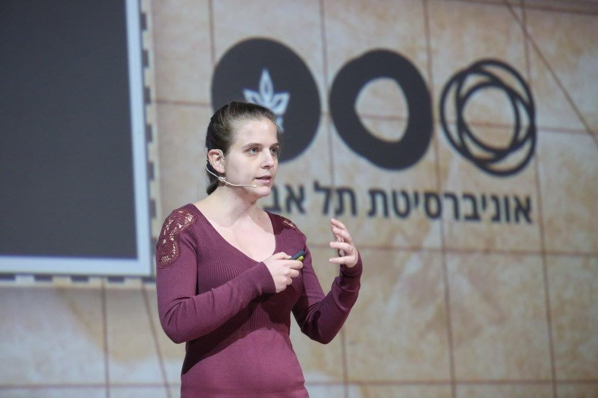

Clara Shikhelman :: קלרה שיכלמן

About
Selected Talks
Papers
- Maypoles: Lightning Striking Twice,
To appear in CES spring 2023
- Unjamming Lightning: A Systematic Approach, Joint with S. Tikhomirov
- Lightning Network Economics: Topology, Joint with G. Huberman and P. Guasoni
- Lightning Network Economics: Channels, Joint with G. Huberman and P. Guasoni
To appear in Management Science
- Ignore the Extra Zeroes: Variance-Optimal Mining Pools, Joint with T. Roughgarden
FC2021
- Interactive Proofs for Social Graphs, Joint with L. Katzir, and E. Yogev
Crypto2020
- Greedy maximal independent sets via local limits, Joint with M. Krivelevich, T. Meszaros and P. Michaeli
AOFA2020
- Additive Approximation of Generalized Turán Questions Joint with Noga Alon
Algorithmica (2022)
- A generalized Turán problem in random graphs Joint with Wojciech Samotij
Random Structures and Algorithms 2019, 123 (2019)
- Semi-random graph process Joint with Omri Ben-Eliezer, Dan Hefetz, Gal Kronenberg, Olaf Parczyk and Miloš Stojaković
Random Structures and Algorithms 2020
- H-free subgraphs of dense graphs maximizing the number of cliques and their blow-ups Joint with Noga Alon
Discrete Mathematics, 342, Issue 4, 988-996 (2019)
- Many cliques in H-free subgraphs of random graphs Joint with Noga Alon and Alexandr Kostochka
J. of Combinatorics, 9.4, 567 – 597 (2018)
- Many T copies in H-free graphs Joint with Noga Alon
J. Combinatorial Theory, Ser. B, 121, 146-172, (2016)
- On the Converse of Talagrand's Influence Inequality Joint with Saleet Klein, Amit Levi, Muli Safra and Yinon Spinka
Available on the arXiv
- Thresholds and expectation-thresholds of monotone properties with small minterms Joint with Ehud Friedgut and Jeff Kahn
Electronic Journal of Combinatorics, 22 (2015)
- Algebraic geometry of Abel differential equation Joint with Shira Giat, Yonatan Shelah, and Yosef Yomdin
Revista de la Real Academia de Ciencias Exactas, Fisicas y Naturales. Serie A. Matematicas, (2014)
Other Activities